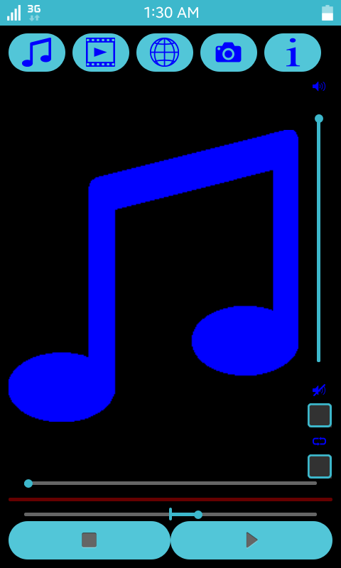

Stream-Player Sample Overview
This sample demonstrates how to use the Player API to play audio and video files as well as stream media files from the Web.
The figure below illustrates the application's view.
Figure: Stream-Player application's screen

The sample application's user interface consists of a single view divided into the following sections:
- Toolbar - Allows the user to choose a file to be played, display information about the file, or capture a screenshot from the played video;
- Option Panel - Allows the user to set the volume level, switch the mute option or switch the looping mode;
- Playback options area - Allows the user to set the play, pause and stop options. It also allows to use the seek and playback rate options;
- Display / Album art area - The played video or album art of a music file is displayed here. Note that if the music file does not provide any album art, a musical note image is displayed instead.